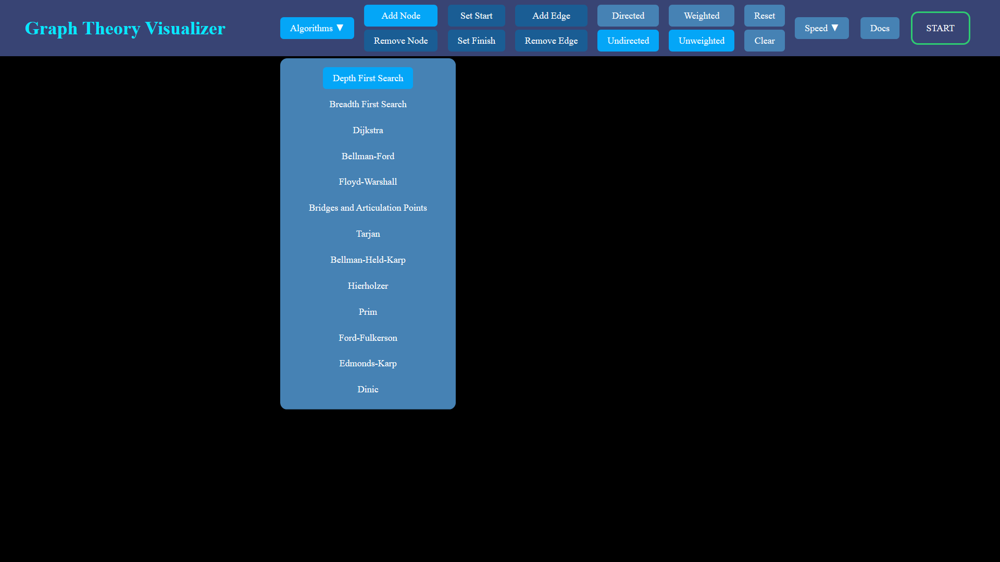
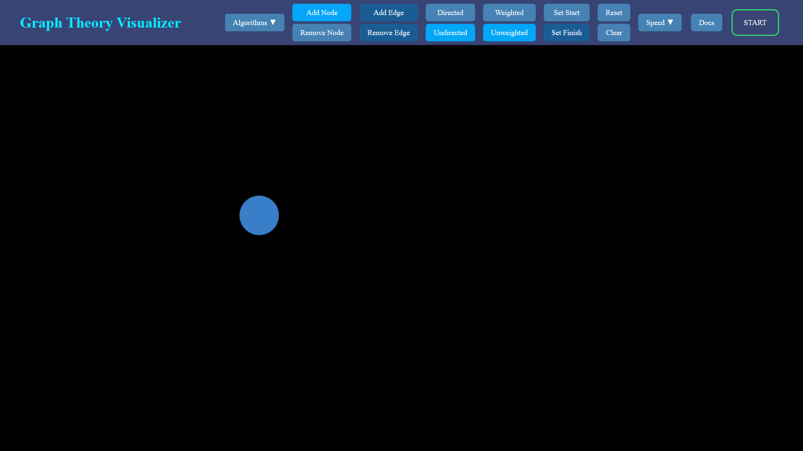
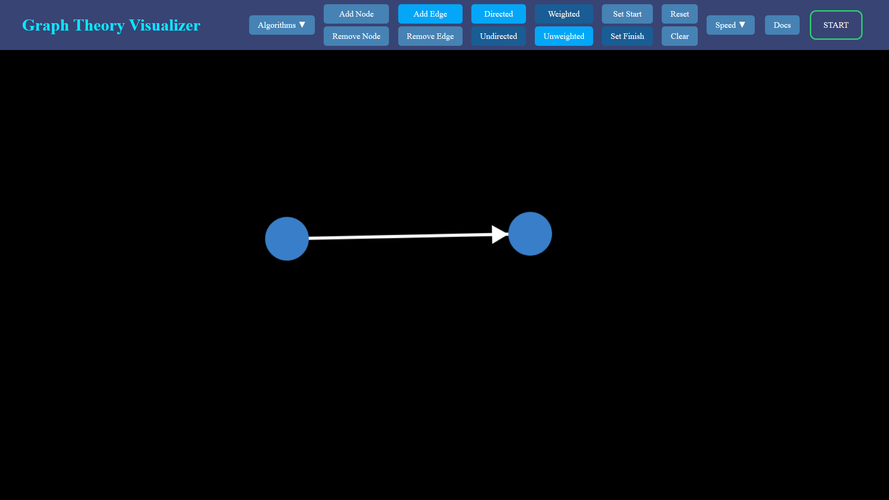
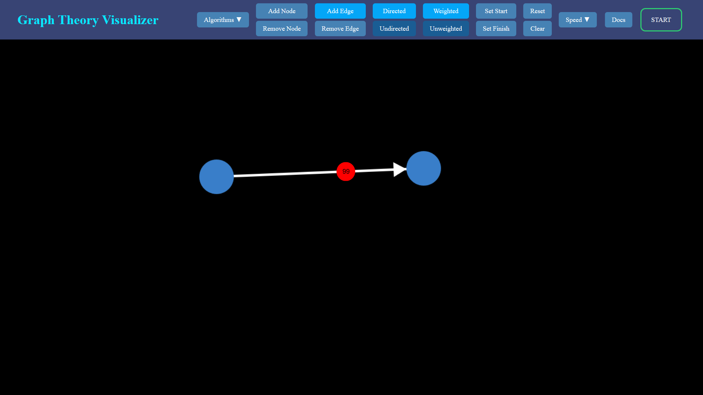
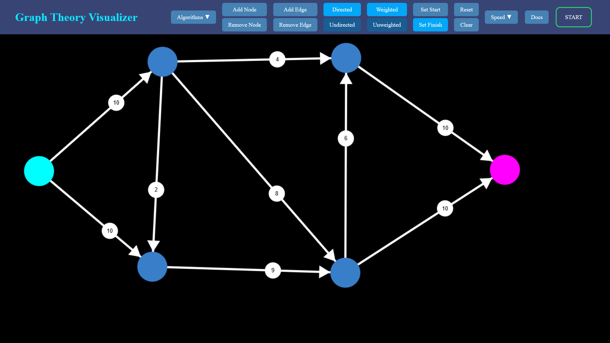
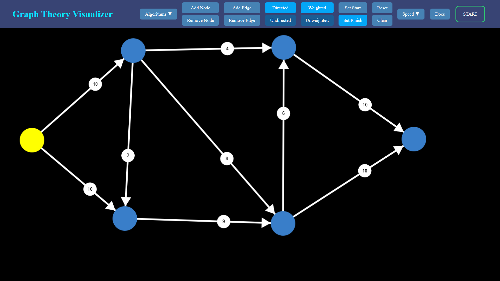
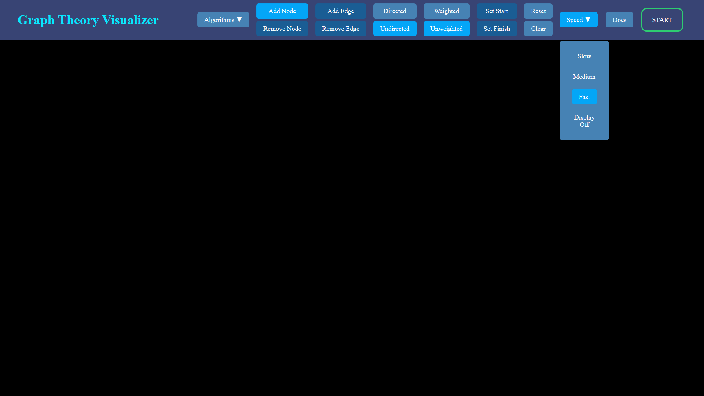

Introduction
Welcome to the Graph Theory Visualizer. This tool was created by John Yu to visualizee how graph theory algorithms work. This document will walk you navigate the various commandds and give a summary of each algorithm that is offered. Lets begin.
How to Use
Start by selecting an algorithm. Click on the algorithms dropdown to show the available algorithms you can select.

Next place a node. Click on the Add Node button, then click anywhere in the canvas. To remove a node select Remove Node and click on node(s) to remove.

When two nodes are present you can place an edge. Click on a node as the starting point, then click on a different node as the end point. To remove an edge select Remove Edge and click on the edge to remove it.
Placing a directed edge is the same as placing an unweighted edge as shown.

For a weighted edge the canvas will prompt you for a weight or flow capacity. Type in a weight or flow capacity in the red input field shown. While the input field is red do not press any buttons, nodes, edges, nor anything for that matter. Press enter to submit. The input field will turn white upon successful submission.


Depending on the graph you many need to select a start and/or an end node. To select a start node select Set Start, then click on any node. The start node is highlighted as cyan. To select an end node select Set End, then click on any node. The end node is highlighted as magnenta. If a node is the start and end node it will be highlighted yellow.


Once you are satisfied with your graph select a speed. This toggles the speed that the visualizer will run through the algorithm. For algorithms with very long run times like the Bellman-Held-Karp algorithm you can disable visualization by selecting Display Off.

Press Start and watch the algorithm run through your graph.
Nodes are color coded for various situations.
- Cyan represents the start node
- Magenta represents the end node
- Yellow represents the node being a start and end node
- Orange indicates the algorithm is currently processing the node and outgoing edges
- Gray indicates nodes that the algorithm backtracked from
- Green indicates the nodes and edges part of the final output
- Red indicates a bridge and articulation point
Algorithms
Depth First Search
The Depth First Search algorithm is a graph traversal algorithm. This algorithm works on directed/undirected and weighted/unweighted graphs. Weight is irrelevant for this algorithm so you will not be given the option to create weighted graphs. The algorithm will traverse through the graph and backtracks upon a dead end. The visualizer will highlight nodes currently being searched in orange and backtracked nodes as gray.
Breadth First Search
The Breadth First Search algorithm is a graph traversal algorithm. This algorithm also works on undirected and weighted/unweighted graphs. Weight is irrelevant for this algorithm so you will not be given the option to create weigted graphs. This algorithm will search through each layer of nodes and return the path with the shortest number of connections from the start node to the end node.
Dijkstra
Dijkstra's algorithm is a single shortest path algorithm. This algorithm works on directed/undirected and weighted graphs. This algorithm will return the path of minimal cost from the start node to the end node. This algorithm is limited to positive edge weights
Bellman-Ford
The Bellman-Ford algorithm is an algorithm that find the shortest path in a graph. The algorithm works on directed and weighted graphs. This algorithm will return the path of minimal cost from the start node to the end node. Unlike Dijkstra's algorithm the Bellman-Ford algorithm is compatible on graphs with negative edge weights. This algorithm will not return an output if the graph contains negative cycles.
Floyd-Warshall
The Floyd-Warshall algorithm is an all-pairs shortest-path algorithm. This algorithm works on directed and weighted graphs. This algorithm will return the path of minimal cost for all pairs of nodes. It is not possible to display every possible shortest path so this tool will only display one shortest path of your choice. The Floyd-Warshall algorithm is compatible on graphs with negative edge weights. This algorithm will not return an output if the graph contains negative cycles.
Bridges and Articulation Points
This algorithm finds bridges and articulation points in a graph. This algorithm works on undirected and unweighted graphs. It will highlight any bridges and articulation points in red.
Tarjan
Tarjan's algorithm is an algorithm to find strongly connected components in a graph. This algorithm works on directed and unweighted graphs. Tarjan's will color code each strongly connected component in a random color.
Bellman-Held-Karp
The Bellman-Held-Karp algorithm is a dynamic programming algorithm to solve the Travelling Salesman Problem. The algorithm works on directed and weighted graphs. This algorithm returns the path of minimal cost that starts at some node, visited each node exactly once, and returns back to the starting node. This algorithm has a time complexity of O(n^2*2^n) such that n is the input size. For graphs with roughly 9 or more nodes it is best to turn off the visualization.
Hierholzer
Hierholzer's algorithm is an algorithm that looks for Eulerian paths in a graph. This algorithm works on directed and unweighted graphs. The algorithm will highlight the edges green in the order they come in the output.
Prim
Prim's algorithm is an algorithm to find the minimum spanning tree of a graph. This algorithm works on undirected and weighted graphs. This algorithm will highlight the edges part of the minimum spanning tree green.
Ford-Fulkerson
The Ford-Fulkerson algorithm is an algorithm to find the maximum flow of a flow graph. This algorithm works on directed and weighted graphs. The Ford-Fulkerson algorithm does a Depth First Search through the graph to look for augmenting paths. It adds the bottleneck value to the edges in the augmenting path.
Edmonds-Karp
The Edmonds-Karp algorithm is an algorithm to find the maximum flow of a flow graph. This algorithm works on directed and weighted graphs. The Edmonds-Karp algorithm does a Breadth First Search through the graph to look for augmenting paths. It addds the bottleneck value to the edges in the augmenting path.
Dinic
Dinic's algorithm is an algorithm to find the maximum flow of a flowgraph. This algorithm works on directed and weighted graphs. Dinic's first does a Breadth First Search and labels the nodes based on discovery time. It then does a Depth First Search to find augmenting paths such that each successive node has a higher discovery time.
References